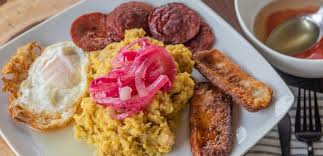

Mangu or (The Three Hits)

Description
Mangú is the most beloved Dominican breakfast dish. It consists of boiled green plantains mashed with butter and water until smooth. It is traditionally topped with sautéed red onions marinated in vinegar. When served with fried salami, fried cheese, and fried eggs, the dish is famously known as "Los Tres Golpes" (The Three Hits).
Ingredients
- 4 green plantains (plátanos verdes)
- 4 tbsp of butter
- 1 cup of cold water (to keep the mash soft)
- 1 large red onion, sliced into rings
- 2 tbsp of fruit vinegar
- Salt to taste
Steps
- Peel the plantains and cut them into chunks. Boil them in salted water until they are very tender.
- Remove the plantains from the water and mash them immediately using a fork or a potato masher.
- Mix in the butter and add cold water gradually while mashing until the texture is smooth and lump-free.
- In a skillet, sauté the onions with vinegar and a pinch of salt until they turn bright pink and soft. Pour over the Mangú.
Home